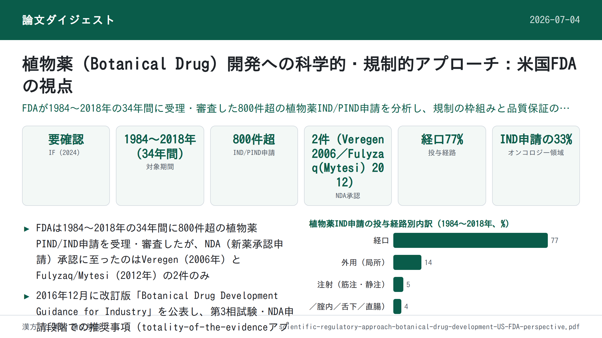

植物薬（Botanical Drug）開発への科学的・規制的アプローチ：米国FDAの視点

書誌情報
- 原題: Scientific and Regulatory Approach to Botanical Drug Development: A U.S. FDA Perspective
- 著者・所属: Charles Wu（責任著者）, Su-Lin Lee, Cassandra Taylor, Jing Li, Yen-Ming Chan, Rajiv Agarwal, Robert Temple, Douglas Throckmorton, Katherine Tyner — いずれも米国FDA 医薬品評価研究センター(CDER)所属（多くは Office of Pharmaceutical Quality, Botanical Review Team／Science Staff, Immediate Office）。Charles Wu の所属は Botanical Review Team, Science Staff, Immediate Office, Office of Pharmaceutical Quality, CDER, FDA（メリーランド州シルバースプリング）。Robert Temple と Douglas Throckmorton は CDER Office of the Center Director 所属。
- 掲載誌・巻号・DOI: Journal of Natural Products 2020, 83, 552–562. https://doi.org/10.1021/acs.jnatprod.9b00949（Review論文）
- インパクトファクター: 要確認（Journal of Natural Products のJCR 2024値について、複数の二次情報サイトを確認したが数値が食い違い・矛盾する記述しか得られず、Clarivate公式の値を確認できなかったため数値は記載しない）
- 受理経過: Received October 1, 2019 / Published January 24, 2020。著者は利益相反なしと宣言。本論文はFDA職員による見解であり、「FDAの公式見解・方針を示すものではない」旨が明記されている。
補足: 本稿はHPLC等の分析手法そのものではなく、FDAが植物薬（Botanical Drug）をどのような規制枠組み・審査基準で扱っているかを、FDA植物薬レビューチーム(Botanical Review Team, BRT)自身がまとめたレビュー。生薬・漢方由来の医薬品開発において、原料の規格設定（GACP）や分析的データ要件（totality-of-the-evidenceアプローチ）を理解するうえで実務的に参考になるため収録した。
要旨（Abstract）
米国FDAは、2018年以前の期間に800件を超える植物薬の治験薬（IND）申請およびpre-IND面談（PIND）要請を受理してきた。現在のデータによれば、提出されたINDの適応症はFDAのほぼすべての審査部門にまたがっている。植物混合物を医薬品として開発することへの世界的関心の高まりにもかかわらず、米国で承認された植物性新薬（NDA）はこれまでVeregen（2006年）とFulyzaq（Mytesiとしても知られる、2012年）の2件のみである。植物薬の化学的・生物学的複雑性を踏まえると、その薬理学的特性の解明、治療有効性の実証、品質の一貫性の確保は依然として科学的・規制的な課題である。FDAは2016年12月に改訂版「Botanical Drug Development Guidance for Industry（植物薬開発に関する産業界向けガイダンス）」を公表し、後期相試験に関する開発上の考慮事項に対応するとともに、植物薬開発を促進するための推奨事項を提供した。本稿では、植物薬INDの分析（原料の産地の多様性〔単一生薬 対 複数生薬など〕、ヒトでの使用経験の水準の多様性、治療領域）を示すとともに、植物薬の審査における経験と課題の概観を提供する。
1. 序論（Introduction）
植物薬（botanicals）およびその他の天然物は、数千年にわたり、幅広いヒトの疾患の治療のための生薬（herbal medicines）として伝統的に用いられてきた。医学の歴史は中国・エジプト・ギリシャ・インド・中東の古代にまでさかのぼる。世界保健機関（WHO）によれば、世界人口の80%は依然として一次医療において植物由来の伝統医薬に頼っており、また植物由来医薬品122種のうち80%は、その本来の民族薬理学的用途に関連している可能性がある。
現代医学は、古代以来の科学研究とイノベーションの蓄積により、あらゆる治療領域で著しい進歩を遂げてきた。しかし新薬開発は、依然として伝統医薬（主に植物由来の治療法を含む）と結びついている。多くの植物薬、また動物由来薬剤・鉱物の薬理学的特性は、多くの初期段階の創薬・開発プログラムの出発点として利用されてきた。伝統医薬の知識と実践的利用は、新薬候補としての薬用植物のさらなる研究を促し、ジゴキシン・パクリタキセル・アルテミシニン系薬剤といった著名な医薬品となった、天然由来分子やその誘導体の単離につながってきた。
植物薬は本来的に不均一な混合物であり、明確な単一の活性成分を欠くことが多いため、複数の成分が全体としての治療効果に寄与しうる。植物性混合物に内在する化学的複雑性のため、植物薬の開発者は、治験薬（IND）の臨床試験を開始する際に、一貫した製品品質の保証など、さまざまな困難な課題にしばしば直面する。複数の植物部位および／または複数の植物種に由来する植物性製品は、この課題をさらに複雑にする。しかし、多くの植物性製品には千年単位に及ぶ使用の歴史があり、これは初期段階のヒト試験の安全性を裏づけるために通常必要とされる新規の動物毒性試験の必要性を、これまでのヒトでの使用経験を活用することで軽減・先送りする機会を与える。この状況に対応し、また植物薬開発を奨励・促進するため、米国FDAは2016年12月に「Botanical Drug Development Guidance for Industry」を改訂・最終化した。このガイダンスは、植物性IND・新薬承認申請（NDA）の提出を検討しているスポンサーに対し、申請プロセスと、化学的に複雑な植物性製品がFDAの厳格な医薬品審査プロセスをどのように満たしうるかについて助言するものである。本稿では、当局の最新の規制上の期待を提示し、植物薬製品開発の審査における当局の経験を共有するとともに、これまでの植物薬IND申請の状況を概観する。
2. 我々の植物薬規制申請の状況：現在まで（Our Botanical Drug Regulatory Application Status Landscape: To Date）
米国内では、企業や研究者はINDを提出することで臨床研究の開始許可を得る。FDAは、IND提出前に当局とコミュニケーションを取ることを企業に推奨している。FDAスタッフとの早期のやり取りは、クリニカルホールド（FDAが試験の実施を認めない措置）の問題が生じるのを未然に防ぐ助けとなりうるためである。そうしたコミュニケーションの一形態がpre-IND面談（PIND）であり、これはスポンサーが完全なIND申請を準備するのを助ける情報を提供しうる。
市販後の新薬の規制・管理はNDAプロセスを通じて行われる。NDA申請は、医薬品開発スポンサーが米国内での新薬の販売・マーケティングについてFDAの承認を正式に提案するための手段である。通常IND下で実施される動物試験・ヒト臨床試験で収集されたデータは、NDAの一部となる。植物薬製品は、低分子医薬品と同じ規制経路を経て審査される。2003年にFDAは植物薬レビューチーム（Botanical Review Team, BRT）を設立し、すべての原初のIND・NDA申請について、生薬原料の分析、ヒトでの過去の使用経験、フィトケミカル（植物化学）成分プロファイルを含む生薬学的レビューを提供している。FDA BRTは、1984年（植物薬INDの受理が始まった年）から現在に至る植物薬pre-IND・IND・NDA申請の社内データベースを維持している。以下に示すデータは1984年から2018年までに受理された申請に適用され、投与経路、治療領域、申請の状況・性質（例：市販薬 対 研究用）、生薬原料の地理的起源に基づいて分析されている。
2.1 年次Botanical PIND/IND申請件数（1984〜2018年）
FDAは1984年より、限られた数の適応症について植物薬INDの受理・審査を開始した。より多くの、より複雑な植物薬が申請されるにつれ、FDAは植物由来製品が従来の化学薬品・生物学的製剤と重要な点で異なることを認識した。そこでFDAは2004年に最初のBotanical Guidance（植物薬ガイダンス）を公表し（2016年に改訂）、植物薬開発の経路と審査プロセスに関する情報を提供した。以降、植物薬開発への関心は高まり続け、スポンサーは完全なIND申請の準備を助け、生薬（例：ヒトでの過去の使用経験、生薬原料の由来・同一性）・化学・製造・管理（CMC）・非臨床または臨床の安全性データの不足に起因するクリニカルホールドの問題を回避するため、pre-IND面談要請の提出を始めた。
過去34年間に800件を超える植物薬PIND/INDがFDAに受理・審査され、（Figure 1に示されるとおり）IND申請は経年的に増加傾向にある。年次IND申請件数は2件（1984年）から56件（2018年）の間で推移した。2000年から2018年までのデータでは、年次PIND/IND申請件数に3回の顕著な急増が見られた。すなわち2007年、2013年、2018年である。最初の急増は2007年に47件で発生し、これは最初の植物薬NDA（Veregen）が承認された1年後にあたる。もう一つの急増は2013年に51件で、2件目の植物薬NDA（Fulyzaq、Mytesiとも呼ばれる）が承認された1年後であった。最後の急増は2018年に56件で発生し、これは当局が改訂・最終版のBotanical Drug Development Guidance for Industryを2016年12月に公表してから1年余り後のことであった。BRTはこの2016年の改訂ガイダンス公表後、当局の最新の考え方への認知を広め、植物薬開発を促進するため、各種の会議・セミナー・ワークショップを通じて外部関係者との積極的なコミュニケーションを開始した。過去15年間では、学術研究機関・製薬企業から毎年おおよそ40件のPIND/IND申請が提出されており、これは1984〜1998年の平均（年10件未満）、および1999〜2002年の平均（年22件）と比較して、全体として増加傾向にあることを示している。これらのデータは、米国内での上市を目指した植物薬開発への関心の高まりを示している。
2000年以降、植物薬INDスポンサーのおよそ4分の1が、開発の早期段階で当局から助言を求め、将来のIND申請におけるクリニカルホールドの問題を回避するため、PIND面談を要請している。これらのPIND要請の大半は市販用IND（commercial IND）のスポンサーからのものであった。
2.2 投与経路別の分類
医薬品一般の場合と同様、植物薬INDの大多数（77%）は経口投与用であった（Figure 2）。スポンサーが選択した経口製剤は、錠剤・丸剤・カプセル剤・懸濁剤・チンキ剤など多様であった。2番目に多い投与経路は外用（局所投与、14%）で、次いで注射（筋肉内投与〔im〕・静脈内投与〔iv〕の両方、5%）であった。残る4%のINDはその他の投与経路（吸入・腟内・舌下・直腸）であった。非経口投与経路は、生薬による医療ではあまり一般的でない。また非経口投与は、品質管理・無菌性・この投与経路に伴う安全性上の懸念に関連する開発上の障壁のために避けられていると考えられる。
2.3 研究目的別の分類
2018年までにFDAへ提出されたINDのうち、およそ3分の2は、主に学術・研究機関の個々の研究者（主に医師）によって実施された研究用IND（research IND）であった。これらは主に小規模な概念実証（proof-of-concept）試験であり、1994年の栄養補助食品健康教育法（DSHEA）のもとで一般的な健康維持や栄養欠乏症に関する表示を目的として市販されているダイエタリーサプリメント（栄養補助食品）としての製品を用いることが多かった。これに対し、疾患の診断・治癒・緩和・治療のために用いることを意図した植物性製品は、FD&C Act 第201(g)(1)(B)条における医薬品の定義を満たし、医薬品として規制される。こうした研究用INDが提案する適応症は、主にオンコロジー（腫瘍学）・皮膚科学・循環器疾患・ウイルス性疾患といった、医療ニーズが満たされていない領域に焦点を当てていた。この提出プロファイルは、既発表の以前の調査結果と概ね一致していた。これらの申請は、製造業者から供給された製品または市販されているダイエタリーサプリメントを使用する個々の研究者から提出されていた。
一方、FDAに提出されたINDの残る3分の1にあたる市販用IND（commercial IND）は、明確な医薬品開発の意図を持つ製薬企業・生薬製造業者によってスポンサーされていた。これらの申請は、生薬原料やその他のCMC情報、ならびに製品の過去のヒトでの使用経験について、より詳細な情報を提供していることが多かった。このような詳細な情報の提供は、FDAが安全性・品質評価を行い、試験が初期段階の臨床試験へ進むことを認める助けとなる。これらの市販用植物薬INDのうち、第3相試験へ進んだ医薬品製品は5%未満であった（データは示していない）。第3相試験への進行は、最終的なNDA申請の強い予測因子である。この成功率は、すべての市販用INDに関する全体の申請成功率（約14%）と比較して低い。この成功率が低い理由としては、しばしば複数の生薬成分の混合物である活性医薬成分（API）の特性解明が困難であり、大規模な第3相試験に進む前に品質の保証を提供することが難しいことが考えられる。植物薬の研究者・開発者らはまた、公開の会議の場において、植物性ダイエタリーサプリメントとしての既存の市販実績があり、したがって意味のある独占権（市場排他性）が存在しないことが、植物薬の厳格な開発に取り組むうえでの大きな経済的な阻害要因になっていると指摘している。伝統医薬における逸話的な経験を、in vitro・in vivoの薬理学的データの裏づけなしに検証可能な仮説へと翻訳することもまた、後期相の臨床開発において問題を生じうる。
2.4 治療領域別の分類
申請がFDAに提出されると、その治療領域に基づき、医薬品評価研究センター（CDER）内の特定の臨床審査部門に割り当てられる。New Drugs局（Office of New Drugs, OND）のすべての新薬審査部門が、少なくとも1件の植物薬IND申請を受けており（Figure 3）、その大部分は3つの審査部門・室に集中している。血液学・腫瘍学製品室（Office of Hematology and Oncology Products, OHOP）は、がん研究のための植物薬IND申請全体のおよそ3分の1（33%）を受理しており、その適応症はがん予防、がんの症状改善、がんの治療（腫瘍縮小効果や進行までの期間、腫瘍バイオマーカーへの影響など）を含んでいた。オンコロジー研究向けIND申請33%のうち、27%は固形がん、6%は血液悪性腫瘍を対象としたものであった。皮膚科・歯科製品部門（Division of Dermatological & Dental Products, DDDP）は植物薬IND申請の11%を受理しており、承認に至ったNDAが1件（Veregen）ある。DDDPへの申請は、乾癬・イボ・創傷・足潰瘍など様々な皮膚疾患を対象とした植物性製品を扱っていた。麻酔・鎮痛・依存症製品部門（Division of Anesthesia, Analgesia & Addiction Products, DAAAP）はIND申請全体の9%を受理しており、関節痛・筋肉痛に対する鎮痛・抗炎症を目的とした局所・経口両方の製品（各種のカンナビス〔大麻〕由来製品の製剤など）を含んでいた。残るIND申請は、他の13の臨床審査部門（神経学・消化器病学・抗ウイルスなど）に分散して受理されている（Figure 3）。
全体として、植物薬INDの治療領域は幅広い適応症にまたがっている。FDAが審査したIND下の疾患適応症は、オンコロジーを除き、EMA（欧州医薬品庁）が公表した生薬医薬品申請のレポートといくらか類似性を示した。植物薬INDにおけるがん患者を対象とした様々な研究の割合は、オンコロジー分野への全体的な創薬開発の関心と一致しているように見える。この結果は、がん患者を中心として、通常の臨床ケアを補完するために植物性ダイエタリーサプリメントや「生薬」を利用することへの一般の関心が高まっているという当方の予想と一致する。一部の植物抽出物ががんやその他の疾患に対して活性を持つことは知られているが、通常の創薬アプローチは、単一の化学化合物を単離・特性解明し、その精製分子または合成類縁体を医薬品候補として用いることであった（例：パクリタキセル）。植物由来のがん治療薬は数多く開発されてきた。現在市場に出ている植物由来低分子抗がん剤には主に4つのクラスがある：ビンカアルカロイド類（ビンブラスチン、ビンクリスチン、ビンデシンなど）、エピポドフィロトキシン類（エトポシド、テニポシドなど）、タキサン類（パクリタキセル、ドセタキセルなど）、カンプトテシン誘導体（カンプトテシン、イリノテカンなど）である。より最近では、2014年に5番目のクラスとしてオマセタキシンメペスクシナート（商品名Synribo）が市場に加わった。しかし植物薬製品は、単一分子の単離物ではなく複雑な混合物である。こうした複雑な混合物には、成分間の相互作用による相乗的な活性が生じる可能性がある。また、植物抽出物中に複数の化合物が存在することで、活性成分の毒性が低減される可能性もある。
2.5 地理的分布と生薬原料の由来
FDAが植物種を検討するにあたっては、国際的な命名規則に従ったラテン二名法による生薬原料の正確な同定が、すべての植物薬IND申請において重要かつ求められる。生薬原料の地理的所在地も同様に、当局が申請中の植物薬製品を審査する際、真正性・品質・安全性を保証するうえで重要である。生薬原料・医薬品製品のバッチ間一貫性を確保するため、特に後期相の植物薬開発においては、優良農業・採取基準（Good Agricultural and Collection Practices, GACP）（WHOのGACPガイドライン、またはEMAの生薬起源出発物質に関するGACPガイドラインを参照）をINDスポンサーが策定し、各地域の生産者・農場レベルで実施し、生薬原料の生産を指導すべきである。
2018年までに、北米で栽培・採取された生薬原料に由来する植物性製品はINDの37%を占めた（Figure 4）。これらの植物性製品は通常、米国では「ダイエタリーサプリメント」として、または消費者から「相補・代替医療（complementary and alternative medicine）」として、カナダでは「天然健康製品（natural health product）」として市販・認識されている。これらはアメリカニンジン（Panax quinquefolius）、ブロッコリースプラウト、ブルーベリー、クランベリー、エキナセア、ブラックコホシュ、ソウパルメットなどの植物に由来する。もう一つの特に注目される植物はカンナビス（大麻、Schedule I物質として使用される場合はマリファナと呼ばれることが多い）であり、北米で栽培されている。カンナビス・サティバ（Cannabis sativa L.）はアジア原産であるが、医療・嗜好の両目的で世界中で栽培されている。米国では、国立薬物乱用研究所（NIDA）薬物供給プログラム（NIH）が、ミシシッピ大学との連邦契約を通じて、IND下の臨床研究者にカンナビス原料・製品を供給している。
INDのもとで研究されている植物性製品のうち2番目に大きな割合（およそ34%）は、アジアの伝統的生薬体系、主に中医学（Traditional Chinese Medicine, TCM、23%）に由来するもので、アジア人参（Panax ginsengの根）、黄耆（オウギ、Huang Qi）、丹参（タンジン、Chinese Salvia、Dan Shen）由来の製品を含む。インド（アーユルヴェーダを含む）由来の伝統生薬は、植物薬INDのさらに11%を占め、しばしばターメリック（ウコン）として知られるCurcuma longa由来の製品を含む。これは最も多く研究されている植物性製品の一つである。少数（1%）の植物薬IND原料は、韓国・日本で一般的に使用される生薬（例：漢方薬）に由来する。生薬原料のこうした地理的分布パターンは、生薬・ダイエタリーサプリメントとして伝統的に使用され、現在も世界的に人気を保っている地域（中国・インド・米国・日本という、世界で最も人口の多い国々を含む）における科学研究への一般的関心の水準を反映している可能性がある。
植物薬INDのおよそ5%は欧州諸国で使用される生薬に由来しており、シリマリン、ラベンダー、カンナビスを含む。カンナビス・サティバから開発された植物性製品Sativexは、多発性硬化症に伴う痙縮の治療のため、欧州・カナダをはじめ全部で25か国以上で植物薬として市販されている。アフリカ・南米・太平洋地域（オーストラリアなど）に由来する原料の植物性製品もわずかながら存在する。興味深いことに、IND申請の5%は、異なる地理的地域に由来する生薬原料を含む複数の植物性生薬から構成されている。これらは通常、中国・インド・欧州・米国に由来する複数の植物を組み合わせた市販サプリメントである。
INDのもとで研究されている植物性製品の一部は、混合または不明の地理的起源（16%）に由来しており、市販されているダイエタリー製品を用いて初期相の臨床試験を実施することを目的としたいくつかの研究用INDを含む。これらのダイエタリーサプリメントには、複数のビタミン・ミネラル・植物成分が様々な地域から含まれていることが多く、生薬原料の地理的起源に関する情報は限られている。
補足: 原文における各地理的区分の割合（北米37%、アジア全体約34%〔TCM23%＋インド/アーユルヴェーダ11%＋韓国・日本1%〕、欧州約5%、複数地域混合5%、混合・不明16%）を合計すると概ね100%に近いが、アフリカ・南米・太平洋地域由来の割合は原文中で具体的な数値が示されておらず「わずか」とのみ記載されている。原文の記載どおりに訳出しており、端数の不一致は原文の記述に起因するものである。
2.6 生薬原料に関連する品質の考慮事項
初期相の試験においては、スポンサーが十分なCMCデータおよび（販売実績等の）過去のヒトでの使用経験や有害事象情報を提供する限り、市販されている植物性製品を用いることが通常受け入れられる。しかし、そうした植物性製品をNDAを裏づける臨床安全性・有効性データを得るための後期相試験（例：第3相）で研究する場合には、品質と一貫性を確保するために、より詳細なCMC情報（生薬原料の特性解明・品質管理〔地理的所在地やGACP収穫基準を含む〕など）が必要となる。
植物薬開発の過程で、GACPの各パラメータ、生薬原料（BRM）の栽培条件、および原料が栽培品か野生採取種かが全体の品質・治療学的一貫性に与える影響について検討すべきである。野生から採取された生薬原料は、栽培された生薬原料よりも大きなばらつきを持つと予想される。栽培される薬用植物種についても、温室栽培と露地栽培とで生薬原料の品質が異なりうる。
植物薬INDの大多数（およそ70%）は、栽培された生薬原料に由来する植物性製品を研究対象としている。例えばアメリカニンジンやブロッコリースプラウトは主に北米で栽培され、アジア人参（Panax ginsengの根）やターメリックはアジアで栽培されている。植物薬INDのおよそ4%は、野生採取された生薬原料に由来する製品を研究対象としている。植物性製品のおよそ11%は、複数の生薬原料で由来が混在するもの（すなわち栽培・野生採取の両方を含む）から製造されている。植物薬IND申請の最大15%は、生薬原料の原産地に関する詳細な情報の提供が限られていた。これは特に、輸入された生薬原料（例：緑茶抽出物）を用いて米国内でダイエタリーサプリメントとして市販されている製品において顕著であった。
伝統的なアジアの生薬体系（例：中医学）で使用される生薬の相当部分は、今なお野生から採取されている。多くの漢方専門家は、野生採取された生薬や特定の地域で採取された種のほうが優れた品質を持つと信じているが、成長の遅い生薬種の野生採取は、その種や環境に重大なストレスをもたらす可能性がある。野生採取された生薬原料の品質管理を実証することは依然として困難である。例えば、害虫対策・重金属管理を含むGACPの遵守や、バッチ間一貫性の確保は、野生採取された植物性製品にとって重要な課題である。研究によれば、食害動物（herbivore）の存在が植物に化学的応答を誘発し、それが多様な生物活性分子の産生につながりうることが示されている。さらに、長期にわたる野生採取の慣行は、一部の生薬の存続そのものを脅かしうる。特定の生薬をさらに植物薬として開発するためには、一貫した品質基準による持続可能な採取慣行の維持、および／または世界各地の適切かつ多様な場所での原料の栽培が検討されうる。例えばFulyzaq（Mytesi）の生薬原料であるCroton lechleri（樹木）の樹液は、GACP手続きの一環として策定・実施された持続可能な採取方法を用い、成熟した野生木から採取されている。各種・品種ごとのGACPは、後期相の開発のために策定されるべきである。また、生薬使用に関連する一般名は、場合によって混乱を招くことがある。例えば「ジンセン（ginseng）」（ウコギ科Panax属）には、北米と東アジアの冷涼な気候で生育する複数の異なる種・変種が存在する。生薬においては、異なる属や科にまたがる複数の種が「同一の生薬」として利用されることがあり、藍（インディゴ・ナチュラリス）などがその例である。
植物種・変種の特性解明と、標準的なラテン二名法命名の使用は、生薬原料の起源を確認するうえで極めて重要である。これは「ジンセン」のような事例で特に該当する。前述のとおり、「ジンセン」という一般名は実際には複数の種・変種を表す。こうした手続きに従わないことは、臨床効果が異なる、あるいは臨床効果を持たない植物薬製品を生産するリスクや、異なる安全性プロファイルとなるリスク、また同一植物の複数種による混入（アダルタレーション）のリスクを伴う。ジンセンの場合、利用可能な薬局方収載の分析法により、特定のジンセノシドの相対量や存否といったジンセノシドプロファイルに基づいて種を判別する、バリデートされた分析法が提供されている。ゲノム解析による種判別法も利用可能であるが、DNAに基づく手法はクロマトグラフィー法に対して補助的（orthogonal）にのみ使用可能である。
3. 産業界向けFDAガイダンスの改訂：植物薬開発の課題と成功事例（FDA Guidance Revised for Botanical Drug Development: Challenges and Success Stories）
2016年、FDAは改訂版のBotanical Drug Development Guidance for Industryを公表した。このガイダンスは初期相の臨床試験に追加の柔軟性を提供するとともに、植物薬もまた他の新薬と同様に、NDA承認を裏づけるための適切かつ管理された試験その他の全体的な品質基準からの臨床データに対し、同水準の信頼性をもって扱われることを明記した。植物薬のスポンサーは、IND、第2相終了時（EOP2）、pre-NDAといった当局との協議に参加することが奨励されており、これによりINDの十分性、適切に管理された確認的な第3相試験の開始、NDA申請を裏づけるデータについて評価を受けることができる。当局とのミーティングその他のコミュニケーションの形態を通じ、スポンサーは追加試験の必要性、臨床プロトコルの設計上の問題、初期または全体的な医薬品開発計画について助言を得ることができる。
FDAが承認するすべての新薬に求められる製品品質の基準および有効性・安全性のエビデンスは、米国内で新薬として販売されることを意図する植物性製品にも同様に適用される。高度に精製された単一分子医薬品では品質基準が比較的単純明快でありうるのに対し、後期相の医薬品開発に進む植物性製品の品質保証は依然として大きな課題である。この課題の一因は、植物薬の大部分が複雑な混合物であり、主要な活性化合物が判明していない、または十分に特性解明されていないことが多いためである。さらに、生薬製剤の化学組成は、植物の由来・栽培地域・栽培慣行・気候条件・加工工程などの違いにより大きく変動しうる。当局は、スポンサーが植物薬製品の品質・安全性・治療学的一貫性を確保できるよう一般的なガイダンスを提供し、より具体的な推奨事項を得るために当局との早期のコミュニケーションを強く奨励している。
初期段階の植物薬の検討においては、植物薬に特有の性質と、その開発における実務上の課題（複雑な混合物の存在、未知または不完全にしか同定されていない主要活性成分など）が考慮される。十分な過去のヒトでの使用実績は、こうした課題を緩和しうる。活性成分・生物活性・過去の臨床使用が不明である場合、申請書はその旨を明確に記載すべきである。特定の医薬品についてINDに提出すべき情報量は、過去のヒトでの使用経験・過去の臨床試験の程度、当該医薬品の既知または疑われるリスク、開発フェーズなど複数の要因に依存する。一例として、DSHEA（1994年栄養補助食品健康教育法）のもとで市販されている植物性ダイエタリーサプリメントや、既知の安全性上の問題のない伝統医療体系で使用されている植物薬は、初期相試験の開始にあたり、新規に発見され、DSHEAのもとで市販されておらず、伝統医療体系での使用もなく、あるいは既知の安全性上の問題を有するために他の理由で扱われる植物性製品と比較して、必要となるCMCデータ・毒性データが少なくて済むことが多い。一般に、市販経験の豊富な製品を用いる初期相の植物薬開発（第1相・第2相臨床試験）は、活性成分の分子レベルでの特性解明などの詳細なCMC情報なしに進められることが多い。
後期相開発における最も重要な課題のいくつかにより適切に対応するため、当局は追加の推奨事項を盛り込んで植物薬開発ガイダンス文書を改訂し、第3相試験・NDA申請に関する内容を扱った。当局は、植物薬製品を用いた第3相臨床試験に関する追加ガイダンスについて、特にBotanical Drug Development Guidance for Industryの「第Ⅵ節：第3相臨床試験のためのIND」に従う。植物薬の複雑性と、植物薬の実際の「活性成分」に関する不確実性を踏まえ、FDAはNDAにおいて植物薬の品質を確保するために様々な規制的アプローチを用い、将来のすべての市販バッチの治療学的一貫性を保証できるようにしている。従来型の化学的特性解明は依然として重要な品質保証の手段であるが、治療学的一貫性は、原料品質・工程管理、CMC、臨床的に妥当な生物学的アッセイ、バッチ間一貫性を確保するための臨床データを含む「totality-of-the-evidence（総合的根拠）」アプローチによって裏づける必要が生じうる。
FDAの承認を経て、植物性製品がその提案用途において安全かつ有効であることが示され、当該医薬品の便益がリスクを上回ることが明らかであり、提案されている表示（添付文書）が適切であり、また医薬品の製造に用いられる方法とその品質を維持するための管理が、医薬品の一貫した同一性・力価・品質・純度を保つのに十分であると判断された場合、NDAは承認され、その医薬品は独占権（過去に単独でも組み合わせでもFDA承認されたことのない化学物質を含む医薬品製品に付与される）付きの処方薬またはOTC薬として一般に販売される。これは医薬品開発者にとって奨励材料となる。この過程は、ダイエタリーサプリメントとしての販売とは異なり、当該植物薬が実際に有益な効果を有するというエビデンスを生み出すため、処方者・患者・支払者がその価値を評価できるようになる。
3.1 植物薬研究の課題と潜在的な利点
植物薬の品質管理には固有の課題がある。例えば、植物の遺伝的特性や栽培条件（土壌、光、温度、湿度、収穫時期など）の違いは、潜在的な活性・毒性成分の濃度に大きな差異をもたらしうる。植物性製品はしばしば、特に複数の生薬・完全には同定されていない活性成分を含む場合、不均一な混合物を含む。地理的地域・季節・加工工程の違いにより、生薬原料の化学組成・生体薬理学的活性に大きなばらつきが生じると予想される。したがって、低分子の品質管理（QC）に用いられる従来型のCMCアプローチでは、時として不十分な場合がある。多くの技術的課題が残るものの、FDAとスポンサーの双方は、現行の医薬品基準を植物薬製品に適用するための主要な規制上・科学上の課題への対応を始めている。当局は、植物薬開発を促進するための規制方針を策定している。一般に、植物薬IND申請の大多数は、当初提案された第1相・第2相の臨床試験について、修正されたプロトコルのもとで、および／または品質・安全性に関する情報要求（IR）に対応した後に、審査続行可能（safe to proceed, STP）と判断されている。この際、伝統医薬（TCM・アーユルヴェーダなど）としての、あるいはマーケティング実績（販売数量・報告された有害事象を伴うダイエタリーサプリメントとしての）としての過去のヒトでの使用経験を提供することが多い。こうした柔軟な規制アプローチは、植物薬業界に対し、活性成分のさらなる精製や同定なしに、過去のヒトでのデータを用いて動物毒性試験を代替・先送りしながら初期相試験を進めるインセンティブを与えており、これにより植物薬開発の期間が短縮されうる。その結果、2018年に審査されたINDのうち、クリニカルホールドとなったものはわずか10.71%、スポンサーにより取り下げられたものは7.14%であった（Table S1、Supporting Information参照）。ホールド・取り下げの理由には、過去のヒトでの使用経験の不十分さ、提案用量の安全性評価に必要な製品情報の不足、当該植物性製品に関連する重篤な有害事象などが含まれる。
後期相（例：第3相/NDA）に進んだ植物薬（約5%）については、当局は通常、スポンサーに対し臨床開発における段階的アプローチの使用を推奨しており、特に初期相の試験結果を後期相の臨床試験の設計に活用しつつ、生薬原料の管理の改善や植物薬物質・医薬品製品のさらなる特性解明に継続的に取り組むことを求めている。第3相試験は複数バッチ・複数用量の試験となる可能性が高く、成功すれば、当該医薬品が疾患適応症に対して安全かつ有効であることを示すだけでなく、提案された医薬品が将来の市販生産に向けて十分なバッチ間一貫性を有することも示すことになる。
4. FDA植物薬ガイダンスの改訂：課題と成功事例（つづき）
4.1 2件の植物薬NDA承認からの経験
開発上の課題にもかかわらず、FDAはこれまでに2件の植物薬NDAを承認している。最初の植物性処方薬であるVeregen（シネカテキン）軟膏は、2006年に承認された。Veregenは、緑茶（Camellia sinensis）の葉から得られる部分精製混合物を植物薬物質として含み、ヒト乳頭腫ウイルス（HPV）によって生じる外陰部・肛門周囲コンジローマ（external genital wart, EGW）の治療のために承認された。この承認は、天然の複雑な混合物由来の新規治療法が、現行のFDAの品質管理・臨床試験基準を満たすように開発しうることを示した。
2012年に承認されたFulyzaq（Mytesiとしても知られる）は、2件目の植物薬NDAであった。Fulyzaqは、Croton lechleriの木の赤色樹皮の樹液に由来するクロフェレマー（crofelemer）を植物薬物質として含み、HIV/AIDSに伴う下痢の治療のために承認された。この植物性製品の安全性・有効性は、3種類の用量を用いた対照臨床試験を通じて確立された。さらに、Fulyzaqの製造業者は、複雑な混合物の分析試験および臨床的に妥当な生物学的アッセイとともに、生薬原料の厳格な品質管理と優良農業・採取慣行（GACP）を確保し、バッチ間一貫性を達成する必要があった。
VeregenおよびFulyzaqの承認は、FDAの科学に基づく「totality-of-the-evidence」規制アプローチが、製品品質の一貫性、ひいては植物薬の治療効果の一貫性を確保しうる、成功したパラダイムであることを実証した。要するに、原料管理、臨床的に妥当な生物学的アッセイ、および／または臨床データを含むエビデンスは、従来型のCMCに加えて、既存の分析技術では植物性混合物全体またはその活性成分を特性解明する能力が限られているという制約を補いうる。これら2件の承認は、業界に対し、伝統医薬を含む植物薬の開発のための実務的な枠組みを提供している。
4.2 信頼できる一貫性のための「Totality-of-the-Evidence」アプローチ
植物薬製品の不均一な性質を踏まえると、植物薬の同一性を完全に決定し、その分子レベルでの一貫性を確保することは技術的に困難でありうる。改訂された草案ガイダンスは、市販バッチが上市前の臨床開発で使用されたバッチと治療学的に一貫していることを示すために、「totality-of-the-evidence」アプローチを推奨している。こうした品質管理は、生薬原料管理（優良農業・採取慣行など）、化学試験による品質管理、製造管理の組み合わせから成る。適切な化学的・生物学的アッセイは、NDA申請前に、正確性・精度・特異性・直線性・範囲の観点でバリデートされる。さらに必要に応じて、生物学的アッセイや複数バッチ・複数用量の臨床データなど、治療学的一貫性を裏づける追加のエビデンスが提供されることがある。
生物学的アッセイ。 化学分析の限界を克服するため、生物学的アッセイが植物性製品の品質管理に組み込まれることがある。特に、粗生薬混合物や複数抽出物の組み合わせから成る医薬品では、化学試験のみでは品質・治療学的一貫性の確保に十分でないことがあるためである。理想的には、品質管理のための生物学的アッセイは、植物薬の既知または意図された作用機序を反映し、および／または提案適応症の薬力学的・代替バイオマーカーに関連づけられる。生薬原料管理その他のCMC手段は、植物薬製品の同一性の確立と品質確保に役立つが、原料・医薬品物質のばらつきが製品の治療学的一貫性に影響しないことを保証するため、品質パラメータと薬理学的活性・臨床効果との相関関係に関する情報を確立することが推奨されることが多い。生物学的アッセイの結果は本質的に多くの化学的アッセイよりばらつきが大きい可能性があることを踏まえ、バッチの力価・活性は、適切な参照標準物質・標準品に対して相対的に測定され、その参照標準物質・標準品に対して較正された活性単位で結果が表現されることが多い。
臨床データ。 改訂ガイダンスは、植物薬に対する臨床反応が異なるバッチによって影響を受けないことを示すため、主要な有効性解析にとどまらない臨床データを求めている。当局はこの点についてスポンサーに2つのアプローチを推奨している。第一のアプローチは、臨床エンドポイントに対するバッチ効果を検討する複数バッチ解析を実施することである。これにより、異なるバッチを受けた被験者間の臨床アウトカムにおける潜在的な異質性を定量化できる。これは原則として、他の種類のサブグループ解析と類似している。第二のアプローチは、臨床反応が用量に対して敏感でないことを示すと同時に、検討された用量がプラセボ・対照より有効であること、または実薬対照に対して非劣性であることを実証することである。これらのアプローチは、承認された2件の植物薬NDAのピボタル臨床試験において実証されており、各治療用量での治療反応はプラセボ対照とは有意に異なっていたが、これらの反応は互いに実質的に同一であることが示された。これは、化学成分の内在的な不均一性が、バッチが規格の範囲内で管理されている限り、最終的な臨床アウトカムに影響を与えないことを示すものであった。
4.3 配合薬（Combination Drug）規制の適用性
1984年から2018年にIND下で審査された植物薬製品の大多数（約70%）は単一の生薬原料を含んでいた一方、残る30%は2種類以上の生薬原料（すなわち単一植物種の複数部位、または複数の植物種）を含んでいた。植物薬製品は、複数の植物薬物質（botanical drug substance, BDS）の組み合わせ、および／または複数の生薬原料（BRM）から一緒に抽出された植物性製剤の組み合わせでありうる。多くの場合、BDSは個別に調製される（例えばBRMから抽出・部分精製し、その後一定比率で混合して最終的な植物薬製品を作る）。しかし場合によっては、BRMを一定比率で混合したのちに特定の溶媒で抽出することもある。実務上、複数生薬からなる製剤（例：神麹〔シェンチュー〕、Medicated Leavenとも呼ばれる）、動物部位（例：ミミズ）、鉱物（特に中医学・アーユルヴェーダなど伝統的な生薬で使用されるもの）が、植物性配合薬の一部となることがある。
現在、複数の生薬原料に由来する植物薬製品は固定配合薬（fixed-combination drug）とみなされている。しかしFDAは、複数の生薬原料を含む製品において、各生薬原料の有効性・安全性への寄与を実証することが常に可能とは限らないことを認識している。要因計画（factorial）試験で検討する植物成分の数が増えるほど、β過誤（誤った陰性判定）も増大する。提案されている改訂配合規則（21 CFR 300.53）では、5成分からなる製品（ABCDE）について、少なくとも4つの比較（プラセボ群を含めば5群、または6群の試験）——ABCDE 対 ABCD、ABCE、ABDE、BCDE——が必要になる例が示されている。それぞれの比較が90%のパワー（各比較でp<0.05となる成功率90%）で計画された場合でも、すべてが成功する確率はわずか60%にとどまる。成分数が増えるほど、この状況は悪化する。歴史的に用いられてきた一部の植物性配合薬の組み合わせでは、要因計画試験の実施が事実上不可能になる。提案されている配合規則のもとでは、すべての構成成分の組み合わせを検討することが実行可能でない場合、当局は免除（waiver）を認めることがある。単一の起源に由来する植物薬製品（例：アメリカニンジンの根）は、複数の活性物質を含んでいたとしても、活性成分を意図的に組み合わせたものでない限り、提案されている固定配合規制のもとで一般に固定用量配合とはみなされない。免除は、天然由来医薬品に含まれる成分の一部のみを含む製品、または提案規則のもとで既に免除を受けている製品についても認められうる。複数の生薬原料からなる植物薬製品候補について免除の適用可能性を議論することは、適切なOND審査部門とともにスポンサーに奨励されている。
多成分生薬製品が増えるにつれ、「totality-of-the-evidence」アプローチはますます重要となる。バッチ間の治療学的一貫性を確保・実証するためには、複数の生薬における「自然に生じるばらつき」が安全かつ有効であり、一貫した品質管理を有することを示すため、生物学的アッセイと複数用量・複数バッチの臨床データが重要となる。
4.4 ジェネリック植物薬に関する考慮事項
ジェネリック医薬品製品は、以下の一般基準を満たさなければならない：安全かつ有効であること、薬学的に同等であること、生物学的に同等であること、適切に表示されていること、cGMP規則に準拠して製造されていること。ANDA（略式新薬申請）申請者は、ジェネリック製品と参照医薬品製品との同等性を実証する十分な科学的エビデンスを提供する責任を負う。参照医薬品製品と同様に、植物薬製品についても、「totality-of-the-evidence」アプローチによる医薬品製品の特性解明が、同等性の実証において重要となる。当局は、製品開発計画や適切な科学的正当化根拠について当局と早期に協議することが、植物薬製品のジェネリック開発を促進すると見込んでいる。
5. 結論（Conclusions）
FDAは、34年間にわたり800件を超える植物薬申請を審査することで、貴重な経験を蓄積してきた。医薬品開発が第3相やNDAといったより後期の段階に進むにつれ、当局は、上市前の臨床開発で使用されたバッチと、市販バッチが治療学的に一貫していることを実証するため、「totality-of-the-evidence」アプローチを推奨する。このように、品質管理は生薬原料の段階から始まる。地理的所在地、土壌、気象、収穫時期などの要因はいずれも、重要成分の濃度に大きな差異をもたらし、最終的に治療学的・品質的一貫性に影響しうるためである。後期相の植物薬開発には、広範なGACPが求められる。植物薬製品の不均一な性質を踏まえると、同一製品の異なるバッチ間で治療学的・品質的一貫性を実証することは、医薬品開発者にとってだけでなく、FDAの規制・科学審査スタッフにとっても、依然として課題である。ほとんどの植物薬について、詳細なCMC情報（医薬品物質の包括的な特性解明データなど）は、初期相の開発（第1相・第2相臨床試験）では必要とされないことがあり、当局は植物薬製品の品質管理および固定用量配合規則について、ある程度の柔軟性をもった実務的なアプローチを取ることがある。結論として、2件の承認NDAと、800件を超える植物薬申請の審査から蓄積された経験・知見をもって、2016年に改訂されたBotanical Guidanceは、後期相の医薬品開発に関する推奨事項により、最も重要な課題のいくつかにより適切に対応している。当局は、より多くの植物性製品が米国内で植物薬として承認を得るべく開発され、それによって患者の満たされていない医療ニーズに応えることを見込んでいる。
訳者補足
- 本論文はFDA職員（Botanical Review Team等）自身の手による、いわば「規制当局側からの実務解説」であり、統計は原文注記のとおり2018年までのデータに基づく。本稿発表（2020年）以降の追加承認事例（例えば2020年代に入ってからの植物薬NDA動向）は原文に含まれておらず、本解説でも扱っていない。最新状況を確認したい場合は原文参照、またはFDAの公表情報を別途参照されたい。
- 「totality-of-the-evidence（総合的根拠）」アプローチという考え方は、単一の化学分析値だけで生薬由来医薬品の品質・一貫性を保証しようとするのではなく、原料管理（GACP）・化学分析（CMC）・生物学的アッセイ・臨床データを重層的に組み合わせて品質の一貫性を担保する発想である。日本の漢方製剤・生薬の品質管理（日局に基づく規格試験や、指標成分による含量規格など）を検討する際にも、化学分析だけに頼らない多面的な品質保証という視点は参考になりうる。
- 図についての注記: 原文には Figure 1（年次PIND/IND申請数の推移棒グラフ）、Figure 2（投与経路の内訳）、Figure 3（治療領域別の内訳）、Figure 4（原料の地理的起源を示す世界地図）が含まれているが、今回の処理では取得したPDFファイルの内容が本論文の図と一致しない（別論文の図が混入していた）ことが判明したため、図版の抽出・掲載は見送った。数値データについては本文中の記述から読み取れる範囲をすべて訳出しており、情報の欠落はない。図そのものを参照したい場合は原文（DOIリンク）を参照されたい。
参考文献
原論文の参考文献。番号は本文の引用（上付き数字）に対応。DOIのある文献はDOI、無い文献はGoogle Scholar検索へのリンク。
- Dias, D. A.; Urban, S.; Roessner, U. Metabolites 2012, 2, 303–336. — Google Scholarで探す
- Farnsworth, N. R.; Akerele, O.; Bingel, A. S.; Soejarto, D. D.; Guo, Z. Bull. World Health Organ. 1985, 63, 965–981. — Google Scholarで探す
- Fabricant, D. S.; Farnsworth, N. R. Environ. Health Perspect. 2001, 109, 69–75. — DOI
- Mishra, B. B.; Tiwari, V. K. Eur. J. Med. Chem. 2011, 46, 4769–4807. — DOI
- Rey-Ladino, J.; Ross, A. G.; Cripps, A. W.; McManus, D. P.; Quinn, R. Vaccine 2011, 29, 6464–6471. — DOI
- Cragg, G. M.; Newman, D. J. Pure Appl. Chem. 2005, 77, 7–24. — Google Scholarで探す
- McRae, J.; Yang, Q.; Crawford, R.; Palombo, W. Environmentalist 2007, 27, 165–174. — Google Scholarで探す
- Fellows, L.; Scofield, A. In Intellectual Property Rights and Biodiversity Conservation—An Interdisciplinary Analysis of the Values of Medicinal Plants; Swanson, T., Ed.; University Press: Cambridge, UK, 1995. — Google Scholarで探す
- Cragg, G. M. Med. Res. Rev. 1998, 18, 315–331. — DOI1098-1128(199809)18:5%3C315::AID-MED2%3E3.0.CO;2-W)
- The Nobel Prize in Physiology or Medicine 2015. Nobel Foundation. — Nobel Prize
- Chen, S. T.; Dou, J.; Temple, R.; Agarwal, R.; Wu, K. M.; Walker, S. Nat. Biotechnol. 2008, 26, 1077–1083. — DOI
- FDA. Revised Botanical Drug Development, Guidance for Industry. — FDA
- Cross, R. Drug development success rates are higher than previously reported. C&EN Chemical & Engineering News. — C&EN
- Khan, I. A. Life Sci. 2006, 78, 2033–2038. — DOI
- European Medicines Agency. Matching patient friendly therapeutic areas for browse search on herbal medicines for human use with ATC therapeutic groups (level 2). 2011. — EMA
- Pharmaceutical Research and Manufacturers of America. Nearly 800 New Medicines in Development to Help in the Fight against Cancer. 2014. — PhRMA
- Deng, G. E.; Frenkel, M.; Cohen, L.; Cassileth, B. R.; Abrams, D. I.; Capodice, J. L.; Courneya, K. S.; Dryden, T.; Hanser, S.; Kumar, N.; Labriola, D.; Wardell, D. W.; Sagar, S. J. Soc. Integr. Oncol. 2009, 7, 85–120. — Google Scholarで探す
- Alvandi, F.; et al. Oncologist 2014, 19, 94–99. — DOI
- McCune, J. S.; Hatfield, A. J.; Blackburn, A. A.; Leith, P. O.; Livingston, R. B.; Ellis, G. K. Support Care Cancer 2004, 12, 454–462. — DOI
- WHO guidelines on good agricultural and collection practices (GACP) for medicinal plants. 2004. — WHO
- European Medicines Agency. Guidelines for Good Agricultural and Wild Collection Practices for Medicinal and Aromatic Plants (GACP-MAP). — EUROPAM
- Wilken, R.; Veena, M. S.; Wang, M. B.; Srivatsan, E. S. Mol. Cancer 2011, 10, 12. — DOI
- Zhuyun, Y. Pharmacy and Clinics of Chinese Materia Medica 2012, 3, 1–6. — Google Scholarで探す
- Huang, L.; Peng, H.; Xiao, P. Zhongguo Zhong Yao Za Zhi 2011, 36, 1–4. — Google Scholarで探す
- Food and Agriculture Organization. A scheme and training manual on good agricultural practices (GAP) for fruits and vegetables. — FAO
- Ginseng. The Plant List. — The Plant List
- Lin, Y. K.; Leu, Y. L.; Yang, S. H.; Chen, H. W.; Wang, C. T.; Pang, J. H. J. Dermatol. Sci. 2009, 54, 168–174. — DOI
- Approved Labeling for Veregen (NDA 021902). — FDA
- Drugs@FDA: Veregen (NDA 021902). — FDA
- Approved Labeling for Fulyzaq (NDA 202292). — FDA
- Drugs@FDA: Fulyzaq Delayed-Release Tablets (NDA 202292). — FDA
- Lee, S.; Dou, J. H.; Agarwal, R.; Temple, R.; Beitz, J.; Wu, C.; Mulberg, A.; Yu, L. X.; Woodcock, J. Science 2015, 347, S32–S34. — Google Scholarで探す
- Acupuncture Today. Massa Fermentata (shen qu): What is massa fermentata? What is it used for? — Acupuncture Today
- 80 FR 79776. Fixed-Combination and Co-Packaged Drugs: Applications for Approval and Combinations of Active Ingredients Under Consideration for Inclusion in an Over-the-Counter Monograph. — Federal Register